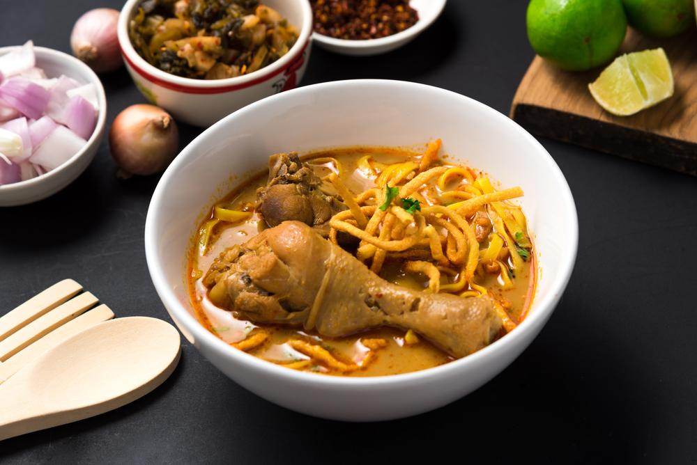
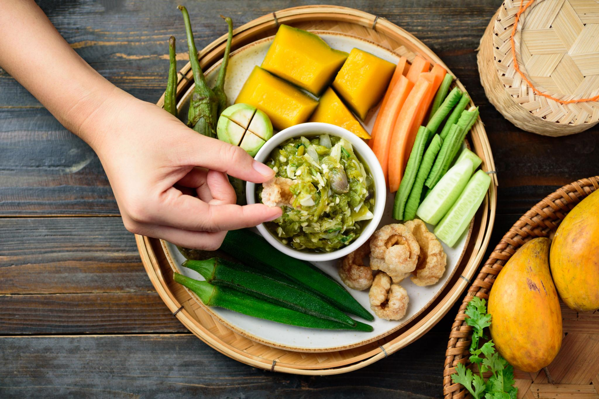
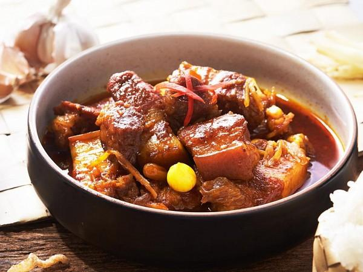
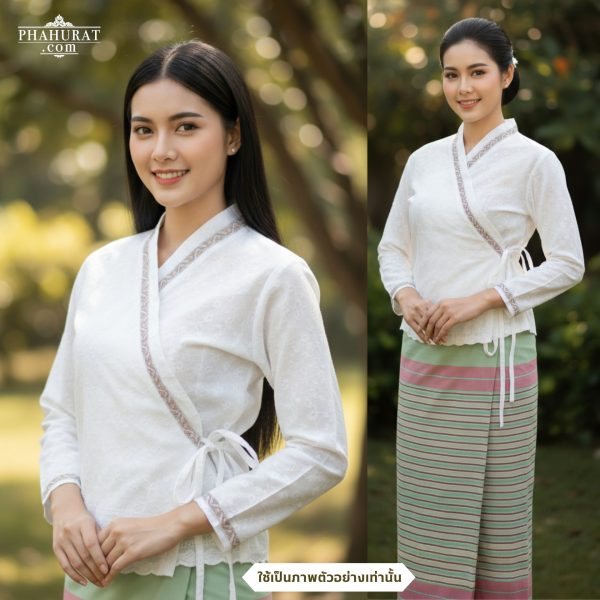
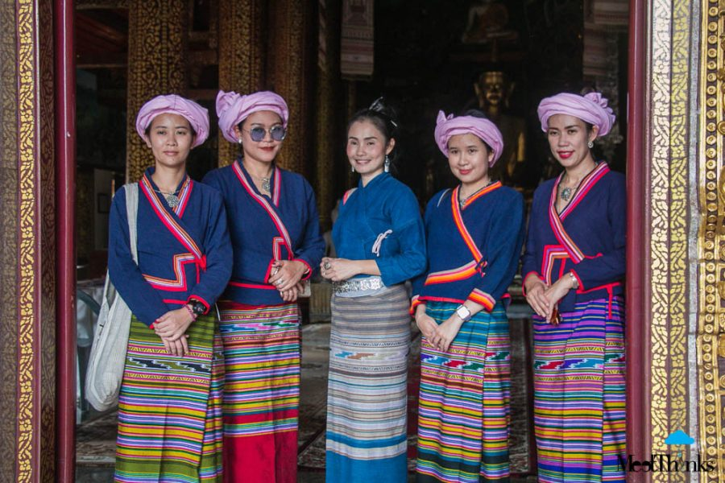
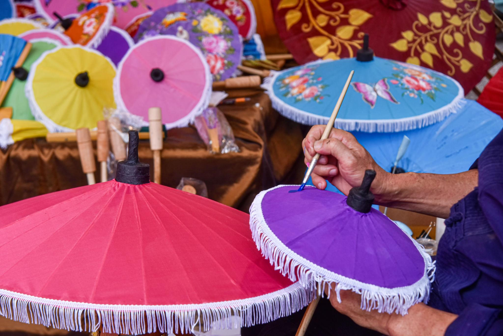
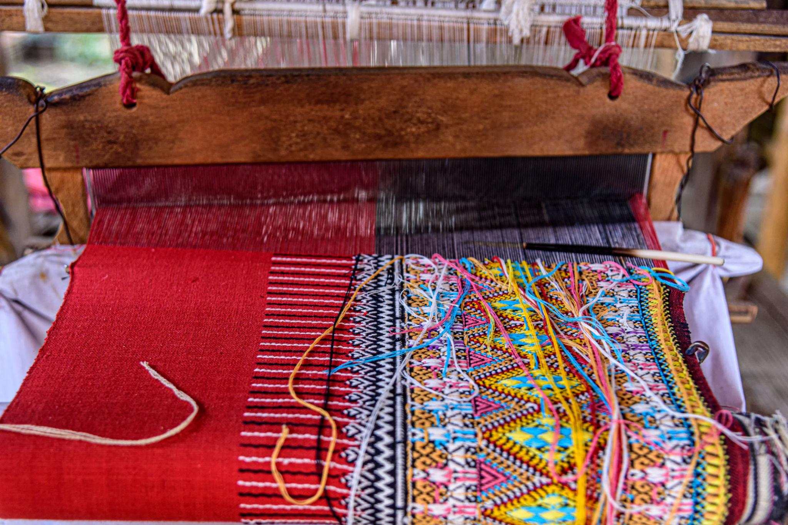

ประเพณียี่เป็ง
จัดขึ้นในคืนวันเพ็ญเดือนยี่ตามปฏิทินล้านนา มีการประดับโคมไฟและจุดผางประทีปเพื่อบูชาพระรัตนตรัย
วิถีแห่งทะเลและผลไม้
ดินแดนแห่งทะเล ภูเขา และผลไม้รสเลิศ
ผสมผสานวัฒนธรรมท้องถิ่นอันเป็นเอกลักษณ์
เสน่ห์เมืองเหนือ

อาหารประเภทเส้นในน้ำแกงกะทิรสเข้มข้น มีกลิ่นเครื่องเทศ นิยมรับประทานกับไก่หรือเนื้อ พร้อมเส้นทอดกรอบและผักดอง

น้ำพริกที่ทำจากพริกหนุ่มย่าง กระเทียม และหอมแดง มีรสเผ็ดหอม นิยมกินคู่กับแคบหมูและผักสด

แกงหมูพื้นเมืองล้านนาที่ใช้เครื่องเทศ ขิง และกระเทียม มีรสเค็มหวานอมเปรี้ยว นิยมทำในงานบุญและเทศกาลสำคัญ

ผ้าและวิถีชีวิตการแต่งกายที่สะท้อนเอกลักษณ์ชาวเหนือ ผู้หญิงนิยมสวมเสื้อแขนกระบอกคู่กับผ้าซิ่น ส่วนผู้ชายสวมเสื้อม่อฮ่อมและกางเกงพื้นเมือง

เรื่องราวบนผืนผ้าเครื่องแต่งกายพื้นเมืองที่โดดเด่นด้วยผ้าทอลวดลายประณีต ผู้หญิงนิยมสวมเสื้อปั๊ดกับผ้าซิ่น สะท้อนวัฒนธรรมและวิถีชีวิตของชาวไทลื้อ

งานฝีมือจากชุมชนหัตถกรรมพื้นบ้านที่นำไม้ไผ่และกระดาษสามาประดิษฐ์เป็นร่ม พร้อมตกแต่งด้วยลวดลายสวยงาม สะท้อนความประณีตของช่างฝีมือล้านนา

หัตถกรรมพื้นบ้านภูมิปัญญาการทอผ้าด้วยเทคนิคจกเส้นด้ายให้เกิดลวดลายละเอียดงดงาม ถ่ายทอดจากรุ่นสู่รุ่นและสะท้อนเอกลักษณ์ของชุมชน